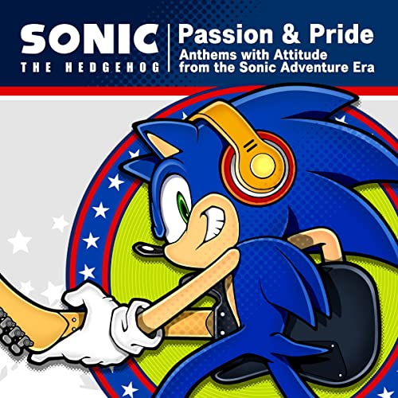

Catalogo de los juegos de Sonic The Hedgehog desde 1991 - 2022. (Mega Drive, Saturn, Sega Dreamcast)
Musica de Sonic The Hedgehog desde lo clasico de Mega Drive hasta Temas vocales nuevos. (Pastiche, TJ Davis, Crush 40, Zebrahead)

Banda Sonora de la Era Dreamcaste de Sonic Adventure Remasterizadas.
Para los fanáticos de los Fondos de pantalla de los actos de los VideoJuegos. (Proximamente)